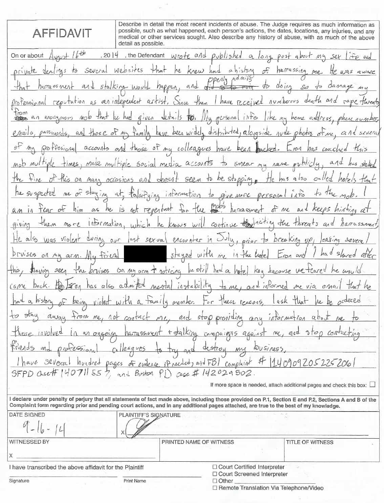
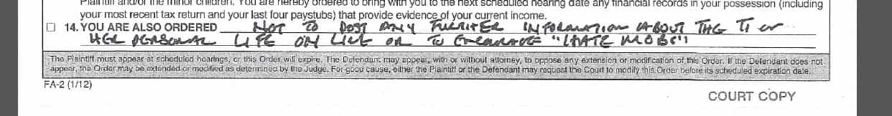
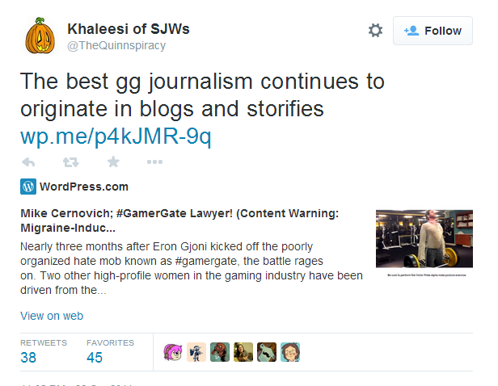
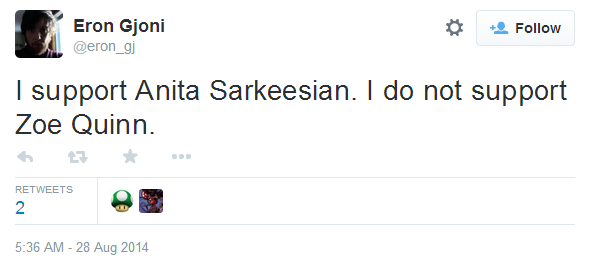
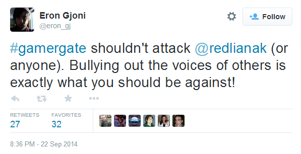
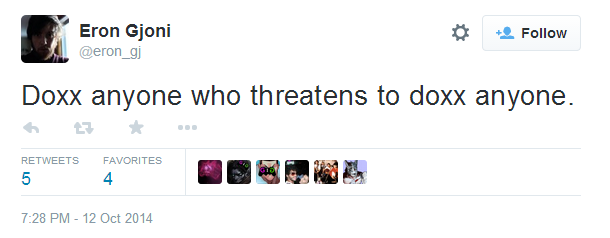
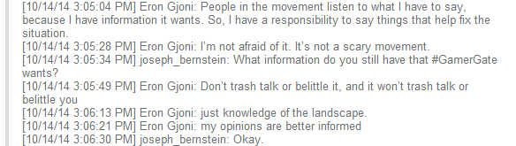

Daryush "Roosh" Valizadeh created ROK in October 2012. You can visit his blog at RooshV.com or follow him on Twitter and Facebook.


Return Of Kings has obtained public court documents from California lawyer Mike Cernovich that contains the harassment complaint Zoe Quin (not her real name) filed against ex-boyfriend Eron Gjoni. Details within this complaint reveal serious inconsistencies that suggest she may be using the courts as a way to censor all criticism about her from Gjoni, whose public revelations about their relationship launched the Gamer Gate movement in August of 2014. Quinn is currently portrayed in the mainstream media and some in the gaming community as a brave woman who is fighting “misogyny” in gaming.
For non-gamers unfamiliar with GamerGate, the movement began with Gjoni’s 9,500 word posting of his relationship with Quinn at The Zoe Post on August 16, 2014. It included stories and screenshots which detail how the relationship got its start and how it ended due to Quinn’s multiple infidelities. The infidelity of any woman is not usually news, but Quinn is a gaming developer who slept with prominent members of the gaming journalist establishment, particularly Nathan Grayson of Gawker-owned Kotaku, which led to her receiving favorable coverage for work that she earned money from.
This corruption was further exposed by journalist Milo Yiannopoulos, who revealed a secret list called GameJournoPros that conspired to manufacture gaming news that matched their extremist agenda, inspired directly from Ezra Klein’s defunct JournoList, which cost the job of a Washington Post reporter. Instead of reporting on the conflict of interest created with Quinn’s personal relationships, they aggressively coordinated to squash GamerGate by broadly painting the ethically concerned gamers as rabid misogynists. Highlighting this collusion further on GameJournoPros was an email thread suggesting that gaming insiders buy Quinn a “feel better” gift along with publishing a letter of support instead of reporting on the major conflict of interest within their ranks.
To many gamers, this revealed the corruption, nepotism, and outright bias of gaming journalism, not to mention the many game reviews which were written by journalists who had relationships with the gaming publishers. Gamers demanded fair changes that were more in line with standard journalistic ethics. They were instead met with a coordinated attack by major sites that declared them “dead,” with admonishments from their editors that nothing untoward was occurring. This launched an acrimonious fight that lasts to this day, with the SJW-dominated gaming media on one side (backed fully by the mainstream media) and gamers who believe that gaming journalism should be free of corruption and extremist infiltration. Advertisers such as Intel, Mercedes, BMW, Adobe, and Nissan have since distanced themselves from sites embroiled in GamerGate.
(A more detailed history of GamerGate’s early beginnings can be found at History Of Gamergate.)
Once The Zoe Post went public, a video was made by MundaneMatt on Youtube that connected her personal relationships with men in the gaming industry. He included a ‘fair use’ excerpt of one of her games, but Quinn filed a DMCA request anyway to censor the entire video. Another Youtuber expanded on the story in a video that is now approaching one million views. Quinn then privately corresponded with the moderator of Reddit’s /r/games, el_chupacupcake, to censor thousands of comments that discussed the revelations brought forth by The Zoe Post.
In the proceeding month, Gjoni gave further information of the relationship that aided the corruption investigation of the decentralized GamerGate movement, but on September 16, 2014, Quinn wanted this to stop. Here are portions of the scanned complaint she filed in Massachusetts on that date:

Quinn’s handwritten complaint
Quinn’s request to prevent Gjoni from writing about her “online”

The court order preventing Gjoni from distributing material to “hate mobs”
And here is a portion of the transcribed text (full transcript can be found on pastebin):
On or about August 16, 2014, the Defendant wrote and published a long post about my sex life and private dealings to several websites that he knew had a history of harassing me. He was aware that harassment and stalking would happen, and openly admits to doing so to damage my professional reputation as an independent artist. Since then I have received numerous death and rape threats from an anonymous mob that he had given details to. My personal info like my home address, phone number, emails, passwords, and those of my family have been widely distributed, alongside nude photos of me, and several of my professional accounts and those of my colleagues have been hacked.
Eron has coached this mob multiple times, made multiple social media accounts to smear my name publicly, and has stoked the fire of this on many occasions and doesn’t seem to be stopping. He has also called hotels that he suspected me of staying at, falsifying information to give more personal info to the mob. I am in fear of him as he is not repentant for the mob’s harassment of me and keeps hinting at giving them more information, which he knows will continue inciting the threats and harassment.
[…]
Therefore, I ask the court to order the following: “not continue to distribute private info about me online and to people harassing me or to contact my friends and colleagues”
Granting of order number eight legally bound Gjoni from talking about her publicly, effectively acting as a chilling effect in all further speech about his ex-girlfriend.
Quinn decided to use the legal system to prevent sharing her “personal info” when in the past she shared the personal information of the organizer of Fine Young Capitalists, a charity organization meant to promote women in gaming. It was claimed that she doxxed the organizer for the reason that they were transphobic, but it has been speculated that she was upset they didn’t offer compensation in exchange for her participation. She helped blacklist coverage of them (aided by her relationships with many reporters in the industry), so that the charity was effectively ruined. It was brought back to life by 4chan donations after Quinn’s actions were revealed.
Quinn also aided the doxxing of my colleague Mike Cernovich yesterday by gleefully retweeting a blog post that showed a photograph of where Cernovich lived, calling it the “best” journalism.

She has petitioned the Massachusetts police to prevent Gjoni from a behavior that she has committed herself less than 24 hours ago.
I read the entirety of The Zoe Post along with Gjoni’s public social networking feeds to find the source of his mob coaching, but I could not find an instance of it. Instead I found a man deeply conflicted about his involvement in GamerGate, and as a self-proclaimed social justice warrior, ambivalence in the movement he has unleashed. Nonetheless, he supports the most prominent opponent of GamerGate:

He has come out against bullying:

And he has come out against doxxing while Quinn continues to actively engage in it:

At the beginning of The Zoe Post, in bold and capitalized letters, he states the following:
I DO NOT STAND BY THE CURRENT ABUSE AND HARASSMENT OF ZOE QUINN OR FRIENDS. STOP DOING THAT. IT IS NOT IN ANYONE’S BEST INTEREST.
His interpretations of her behavior and psychology could be very well wrong, but I could not find instances of genuine harassment or coaching, and he even has gone the extra step to censor names out of chat logs that he had with Quinn. Instead you’re more likely to find an emotional if not sappy outpourings from a man who has been crushed by his relationship with Quinn:
For the next four hours I lie awake next to the woman I love – or someone who I thought was the woman I loved, but who has yet to provide a reasonable explanation for what she’s done to me. Who even after all of these revelations, I still can’t help but trust.
As embarrassing as these details might be to Quinn, posting factually based details of past relationships and sharing them on social networking is not typically defined as mob “coaching,” “harassment,” or name “smearing.” Otherwise, a company like Yahoo, which owns the most emotional platform on the internet, Tumblr, would face huge liabilities.
On October 16, 2014, Gjoni did an interview with Joseph Bernstein. The interview contains a portion that seems to corroborate Quinn’s assessment that Gjoni coached the mob:
He admitted to regularly advising GamerGate leaders, and seems to take some pride in the power he claims to exert over the movement, as well as over the effect the movement has had on gaming journalism.
I investigated further by reading the entire interview transcript. I immediately noticed that Bernstein’s “interview” was more like a hostile interrogation, whereby it was obvious to see the agenda Bernstein possessed. This isn’t surprising considering that Buzzfeed had previously published an anti-gamer article along with one of its employees expressing hatred for the movement by calling it part of a “shitty” culture.
In connection to Gjoni’s advisement of GamerGate “leaders,” this is the relevant portion I found in the interview:

Gjoni provided “knowledge of the landscape” and informed “opinions,” which Buzzfeed transformed into Gjoni acting as a sort of mastermind of GamerGate. It almost seemed like Berstein was in possession of the harassment order and wanted to stretch Gjoni’s words to better corroborate with it.
The interview did include an interesting quote from a woman in gaming who supports what Gjoni did, suggesting that claims of Gjoni’s “harassment” are exaggerated:
Rachel Martin, is a 25-year-old freelance designer who described herself as a radical feminist. Martin described Gjoni as “gentle and conscientious” and said that she condoned the publication of “thezoepost” because of her own past as a victim of emotional abuse, which she felt Quinn had committed against her friend.
If it can be proved that Gjoni did not coach the mob or “stoke the fire” as Quinn claims, she would be on the hook for filing a false police report, a misdemeanor or felony crime depending in the severity of infraction.
It’s hard to deny that Quinn has received harassment and threats since The Zoe Post went public, but the evidence does not clearly show it came from Gjoni, suggesting that her petition with Massachusetts was filed more to censor Gjoni from sharing details of their relationship that conflict with the public reputation Quinn wants to maintain as a game developer. Her petition does fit with her clumsy previous attempts at censorship on Youtube and Reddit, and her actions against the Fine Young Capitalists and Mike Cernovich show that she continues to actively use doxxing as a strategy against those whom she disagrees with.
“Zoe is in fact a pretty solid narrative designer. And if there’s any significant fault to find in her narrative design, it’s that she never stops doing it.” -Eron Gjoni
For a woman who is held up as an innocent victim by the media industry, GamerGate supporters should be concerned that they are up against an establishment that is supporting someone whose concept of free speech is far narrower than their own. This establishment will persist in painting GamerGate supporters as harassers and misogynists while their own “victimized” darlings continue to dox others. They say that enemy flak is most intense when you’re flying right over the target, hinting that GamerGate may be close to further truths that corrupt insiders don’t want revealed.
Read Next: Why Is The Zoe Quinn Scandal Blacked Out Across The Internet?
{kind=link}
{kind=link}
{kind=link}
{kind=link}
{kind=link}
{kind=link}
{kind=link}